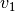
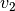

Welcome to PoseUtils’s documentation!¶
Common¶
- poseutils.common.calc_angle_360(v1, v2, n)[source]¶
Calculates the angle within 360 degrees between two vectors  and  around normal
 .
.
- Parameters
v1 (numpy.ndarray) – Vector Nx1 or 1xN
v2 (numpy.ndarray) – Vector Nx1 or 1xN
n (numpy.ndarray) – Vector Nx1 or 1xN
- Returns
Angle in degrees
- Return type
degree
View¶
- poseutils.view.draw_axes(R, t, ax, scale=0.5)[source]¶
Draw xyz axes centered at a position.
- Parameters
R (numpy.ndarray) – Rotation matrix (3,3) with columns representing xyz columns respectively
t (numpy.ndarray) – Position t (3,) acting as the origin of the xyz axes
ax (matplotlib.pyplot.subplot) – Matplotlib subplot reference
scale (float, optional) – To scale up the axes, defaults to 0.5
- poseutils.view.draw_bounding_box(lx, ly, rx, ry, ax)[source]¶
Draws bounding box
- Parameters
lx (numpy.ndarray) – X coordinates (Nx1) for top-left corner of the box
ly (numpy.ndarray) – Y coordinates (Nx1) for top-left corner of the box
rx (numpy.ndarray) – X coordinates (Nx1) for bottom-right corner of the box
ry (numpy.ndarray) – Y coordinates (Nx1) for bottom-right corner of the box
ax (matplotlib.pyplot.subplot) – Matplotlib subplot reference
- poseutils.view.draw_skeleton(pose, ax, jnts_14=True)[source]¶
Draws a skeleton from joints
- Parameters
pose (numpy.ndarray) – Joint positions either 2d (Nx2) or 3d (Nx3) where N = 14 or 16
ax (matplotlib.pyplot.subplot) – Matplotlib subplot reference
jnts_14 (bool, optional) – Flag to specify whether to use 14 joint (True) or 16 joint (False) configuration, defaults to True
Transform¶
- poseutils.transform.normalize_skeleton(joints)[source]¶
Normalizes joint positions (NxMx2 or NxMx3, where M is 14 or 16) from parent to child order. Each vector from parent to child is normalized with respect to it’s length.
- Parameters
joints (numpy.ndarray) – Position of joints (NxMx2) or (NxMx3)
- Returns
Normalzed position of joints (NxMx2) or (NxMx3)
- Return type
numpy.ndarray
- poseutils.transform.normalize_torso_2d(torso)[source]¶
Takes in the torso coordinates and normalizes it. Takes the distance of each torso joint from the Right Hip joint position. Each distance is then normalized with the distance along the diagonal connecting Right Hip to Left Shoulder. A small value is added to the diagonal distance to avoid divide-by-zero error.
- Parameters
torso (numpy.ndarray) – Torso joint positions (Nx4x2), with arranged in order: Right Hip, Left Hip, Left Shoulder, Right Shoulder
- Returns
New torso positions (Nx4x2)
Width of right hip to left hip, right hip to left shoulder, right hip to right shoulder (Nx3)
List of names of the widths
- Return type
tuple(numpy.narray, numpy.ndarray, list(str))
- poseutils.transform.normalize_zscore(X, mean, std, skip_root=False)[source]¶
Normalize position of joints using z-score normalization. Subtracts mean and divides by standard devation. Metrics are ideally collected from the training set.
- Parameters
X (numpy.ndarray) – Position of joints (NxMx2) or (NxMx3)
mean (numpy.ndarray) – Mean joint position (Mx2) or (Mx3)
std ([type]) – Standard deviation of joint positions (Mx2) or (Mx3)
skip_root (bool, optional) – Whether to skip over the root/hip when normalizing, defaults to False
- Returns
New position of joints (NxMx2) or (NxMx3)
- Return type
numpy.ndarray
- poseutils.transform.root_center(X, root_idx=0)[source]¶
Subtract the value at root index to make the coordinates center around root. Useful for hip-centering the skeleton.
- Parameters
X (numpy.ndarray) – Position of joints (NxMx2) or (NxMx3)
root_idx (int, optional) – Root/Hip index, defaults to 0
- Returns
New position of joints (NxMx2) or (NxMx3)
- Return type
numpy.ndarray
- poseutils.transform.scale_bounding_area_to(X, bbox, low=0, high=256)[source]¶
Scales up or down the bounding box enclosed region to fit in a (high-low) sided square while preserving aspect ratio.
- Parameters
X (numpy.ndarray) – Position of joints (NxMx2)
bbox (numpy.ndarray) – Bounding box coordinates (Nx4) where columns are stacked as [lx, ly, rx, ry]. (lx, ly) is the coordinate for top-left corner whereas (rx, ry) is the coordinate of the bottom-right corner
low (int, optional) – Lowest value of the bounding box, defaults to 0
high (int, optional) – Highest value of the bounding box, defaults to 256
- Returns
New position of joints (NxMx2)
- Return type
numpy.ndarray
- poseutils.transform.unnormalize_zscore(X, mean, std, skip_root=False)[source]¶
Reverses normalized position of joints using z-score normalization. Multiplies by standard devation and adds the mean. Metrics are ideally collected from the training set.
- Parameters
X (numpy.ndarray) – Position of joints (NxMx2) or (NxMx3)
mean (numpy.ndarray) – Mean joint position (Mx2) or (Mx3)
std ([type]) – Standard deviation of joint positions (Mx2) or (Mx3)
skip_root (bool, optional) – Whether to skip over the root/hip when unnormalizing, defaults to False
- Returns
New position of joints (NxMx2) or (NxMx3)
- Return type
numpy.ndarray